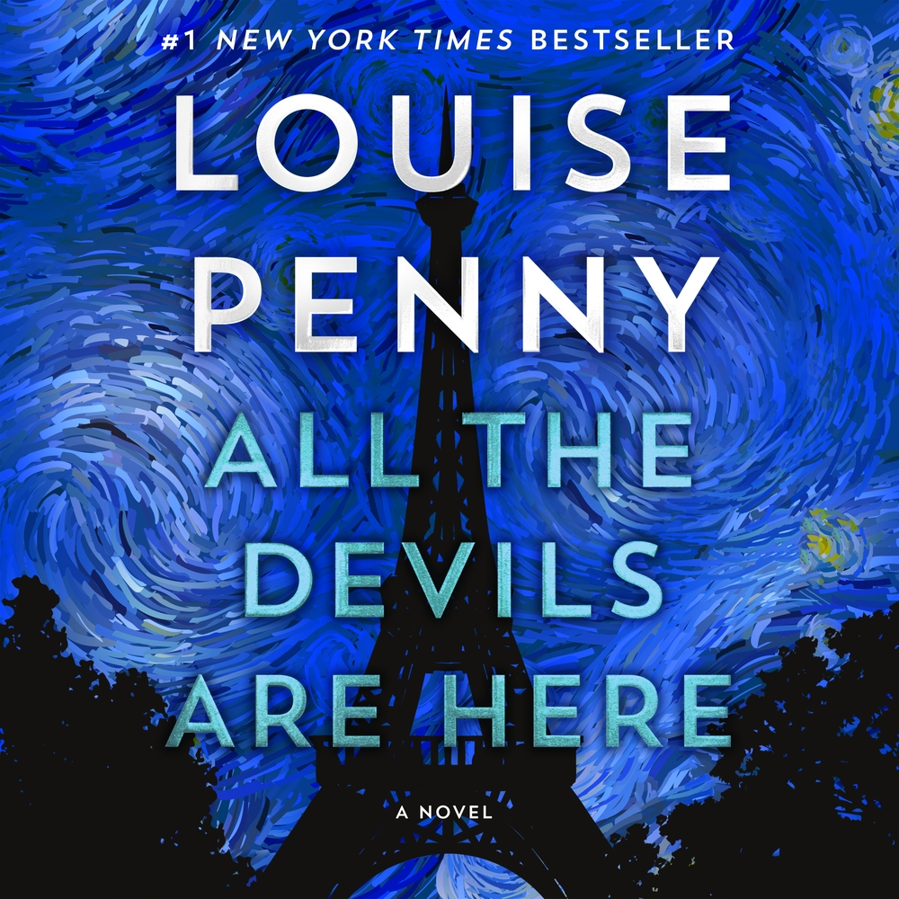
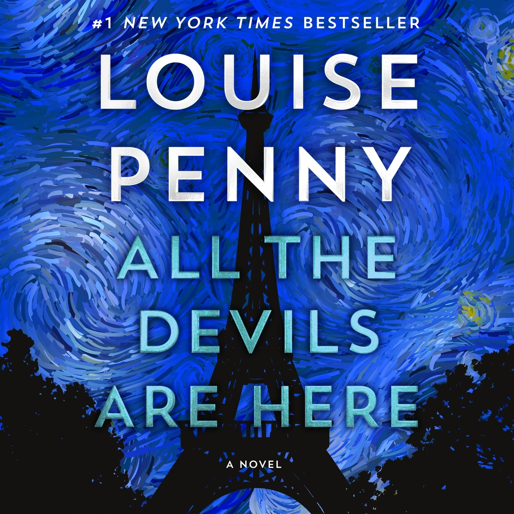

MUST TRY BOOKS
 


The Murder of Roger Ackroyd
Description:Written by Agatha Christie, this classic novel features Hercule Poirot solving the mysterious death of a wealthy man in a small English village. Its innovative narrative structure has been praised for its ingenuity
"Listen to the Audiobook"The Secret History
Description: Donna Tartt's debut novel delves into a group of college students whose obsession with ancient Greek culture leads to a murder. The book is noted for its exploration of moral ambiguity and the consequences of intellectual elitism. The story emphasizes the importance of following one’s dreams, listening to one’s heart, and recognizing the treasures already present in life. With its timeless themes and engaging narrative, The Alchemist has captivated millions of readers around the world. It's a must-read for anyone seeking adventure and deeper meaning in life.
"Listen to the Audiobook"All the Devils Are Here
Description: art of Louise Penny's Chief Inspector Armand Gamache series, this novel is set in Paris and involves a complex plot with intricate relationships. It's celebrated for its richly drawn characters and atmospheric setting.
"Listen to the Audiobook"The Couple Next Door
Description:Shari Lapena's thriller centers on a couple whose baby goes missing while they're at a dinner party next door. The story is a chilling tale of deception and unfaithfulness, keeping readers on edge until the final twist.
"Listen to the Audiobook"